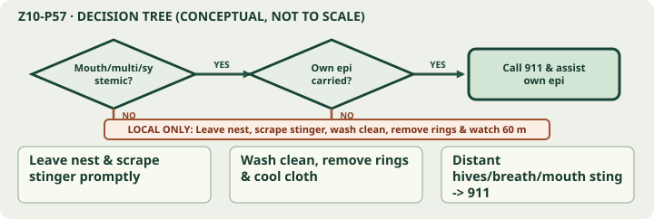

Z10-P57 · Wilderness medicine · New manuscript
Manage routine bee and wasp stings while screening for systemic reactions
Relieve localized insect stings cleanly and distinguish normal local swelling from life-threatening allergic or multiple-sting emergencies.
When it applies · Honeybee, yellowjacket, hornet, or wasp stings outdoors.
Equipment · Flat stiff card edge, soap and safe water, cool compress, and watch.

Actions
- Move promptly away from the nest or swarm zone to prevent multiple stings; if a honeybee stinger remains in skin, scrape it off promptly sideways with a flat edge (card/fingernail) or pull gently without squeezing a visible venom sac.[M08, M06]
- Wash the sting area gently with soap and safe water, remove rings near finger stings early before swelling builds, and apply a cool clean damp cloth for comfort.[M06, M07]
- Watch closely for at least 30 to 60 minutes for systemic anaphylaxis signs (hives away from the sting, lip/tongue swelling, wheezing, dizziness, vomiting), stings inside the mouth/throat, or heavy multiple-sting swarms—all require immediate 911 activation.[M08, T02]
Failure recognition · Dismissing spreading hives on the chest and hoarse voice after a hand sting as a "normal strong reaction."[M08]
Verify · Confirm stinger removed, rings off, local site cleaned, and zero distant hives or breathing symptoms over monitoring window.[M08, M06]
Stop or change course · Any throat/mouth sting, breathing change, dizziness, widespread hives, or dozens of stings escalates immediately to 911.[M08, T02]
Evidence and editorial notes
- M06 · NIH / MedlinePlus · Wounds and Injuries (current web edition)
- Section: Minor Wound Cleaning, Protection, and Infection Red Flags · Conditions: Superficial cuts, scrapes, and abrasions with potable water available
Support: Rinse minor wounds thoroughly with clean potable water, cover with a clean sterile dressing, and monitor for worsening redness, warmth, swelling, pus, red streaks, or fever.
Limitations: Deep punctures, animal bites, retained foreign bodies, or heavily contaminated wounds require clinical evaluation and tetanus review. · Conflicting evidence: None; separates clean potable rinsing from harsh chemical wound scrubbing.
Editorial note: Anchors field wound hygiene and infection escalation cards. · Specialist reviewer: Wilderness medicine and wound care
Primary source · checked 2026-11-24 - M07 · NIH / MedlinePlus · Burns (current web edition)
- Section: Thermal Burn Cooling, Covering, and Severity Escalation · Conditions: Minor vs major thermal burns (flame, scald, contact)
Support: Cool minor superficial burns with cool (not icy) running water, remove constricting rings/clothing not stuck to skin, cover loosely with clean non-stick dressing, and seek emergency care for deep, large, facial, hand, foot, genital, joint, or airway burns.
Limitations: Never apply ice, butter, grease, or ointments to fresh burns, and do not pop intact blisters. · Conflicting evidence: None; aligns with ARC/ABA lay burn first aid.
Editorial note: Establishes burn-cooling limits and automatic clinical-escalation zones. · Specialist reviewer: Burn care and wilderness medicine
Primary source · checked 2026-11-24 - M08 · AHA and American Red Cross · 2024 Guidelines for First Aid (2024)
- Section: Anaphylaxis · Conditions: Suspected severe allergic reaction; community first aid; prescribed epinephrine or applicable local protocol
Support: Activate EMS promptly and assist with epinephrine under the relevant device or action plan. Follow professional direction for subsequent care.
Limitations: Pediatric device selection, subsequent dose, timing and transfer require product, patient and local protocol. · Conflicting evidence: See A02 claim audit for boundaries.
Editorial note: Separates assisting with a patient's prescribed auto-injector from lay prescribing. · Specialist reviewer: Allergy/immunology and EMS
Primary source · checked 2026-11-25 - T02 · American Red Cross · First Aid Steps (current web edition)
- Section: First Aid Steps > Call 9-1-1 · Conditions: Lay emergency response to unresponsiveness, abnormal breathing or severe bleeding
Support: Activate EMS and get needed equipment. Follow dispatcher directions and act within training.
Limitations: Remote locations may delay EMS arrival, requiring sustained stabilization after activation. · Conflicting evidence: None; aligns with NPS-E.
Editorial note: Mandates early emergency activation and dispatcher adherence. · Specialist reviewer: EMS and wilderness medicine
Primary source · checked 2026-11-24
Source lineage · NIH MedlinePlus Anaphylaxis and First Aid; new manuscript · Classification · New manuscript.